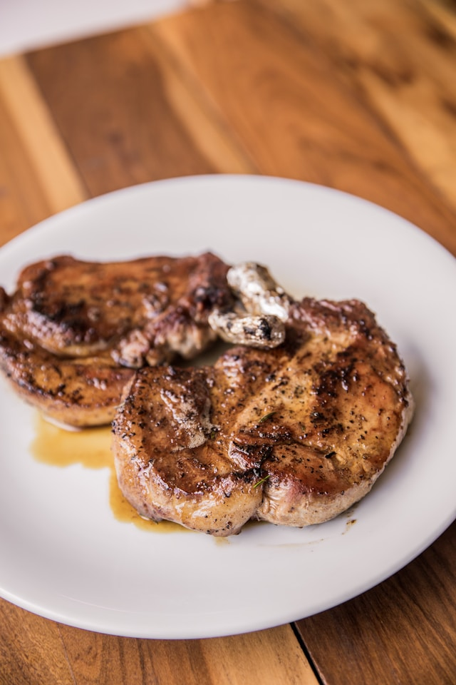

Pork Chops

Description
Pork chops are a common and delicious lean cut of the pig. This simple and delicious recipe makes for an easy and comforting meal.
Ingredients
- 2 tablespoons paprika
- 2 tablespoons white sugar
- 1 tablespoon salt
- 1 tablespoon black pepper
- 1 tablespoon garlic powder
- 1 tablespoon onion powder
- 2 teaspoons cayenne pepper
- 6 pork chops
Steps
- Preheat the oven to 450 degrees F (230 degrees C).
- Mix the spices together in a wide, shallow bowl.
- Place pork chops in the spice mixture to coat and arrange on a baking sheet.
- Bake chops in the oven for about 20 minutes until no longer pink. The internal temperature should read 145 degrees F (63 degrees C).
Home